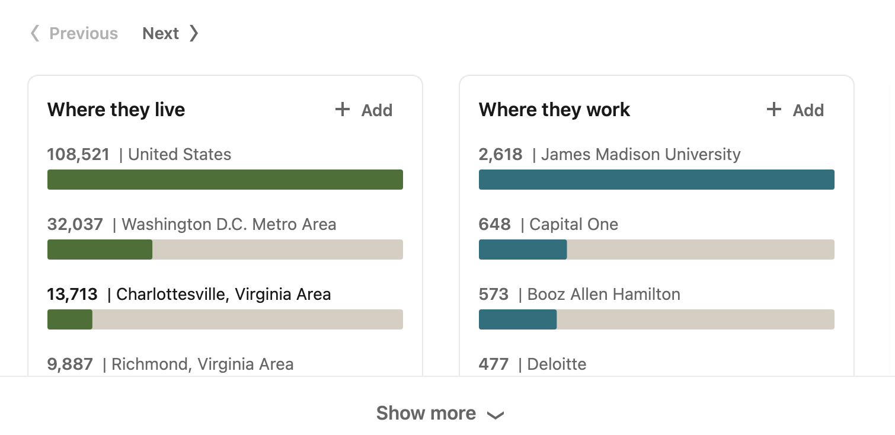
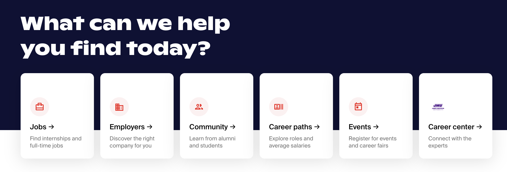

Independent Project Proposal
Project Name: CONNECT:JMU
Overview of Work:
As JMU students approach their graduation, they lack a central and user-friendly job posting and messaging board to connect them with alumni. Even after graduation, there is no central place for JMU alumni to connect with others when job searching. The interface will allow users to create an account by typing in their name, go through an authentication system to confirm they are a current JMU student or alumni, and prompt them to create a profile. From there, the user will have the options to follow other alumni (who may be posting work), message other alumni, and explore what opportunities people are working on. There will also be an option to post jobs if alumni are seeking other alumni for a particular position. To create this platform for these users, a website and mobile app must be designed. The purpose of this is to create a platform that would work on a desktop/laptop device, as well as a mobile phone. To effectively execute this work, I will need to have in-depth knowledge of HTML/CSS, hosting, and app creation software (like Adobe XD, Axure RP, Sketch, and/or Figma). In order to better learn these skills, I will be completing (LINKEDIN LEARNING COURSE). In terms of specific choices made about the interface, it will stick to a neutral black and white color scheme, with an occasional pop of JMU purple.
Goals:
The JMU alumni network has no central place to connect people for job networking purposes. Every major, in some cases, has a specific place for these networks to build, however; they are often inconsistent, unused, and inefficient. By having this lack of organization between these networks, JMU is neglecting to serve an essential need for JMU students and alumni. They are forgetting about a user group. As discussed in “Technically Wrong,” designers must…
Goals:
The JMU alumni network has no central place to connect people for job networking purposes. Every major, in some cases, has a specific place for these networks to build, however; they are often inconsistent, unused, and inefficient. By having this lack of organization between these networks, JMU is neglecting to serve an essential need for JMU students and alumni. They are forgetting about a user group. As discussed in “Technically Wrong,” designers must…
Audience Personas:
The primary audience for the CONNECT:JMU interface will be JMU students and alumni who are actively job seeking. The secondary persona will be JMU alumni and students who are interested in connecting with other alumni and students but are not actively job hunting.
Timeline of Project:
For this project, the proposal and index.html file to present it are to be submitted by Friday, February 5, 2021. The LinkedIn learning courses are set to be completed on February 19, 2021. While working on the course, the initial prototypes of the project will be created. After this date, interviews and run-throughs will be conducted to test the product. Next, the high-fidelity prototypes will go through it’s final edits and be completed. The final independent project submission is due to be completed and submitted by March 5, 2021.
Visual Samples



